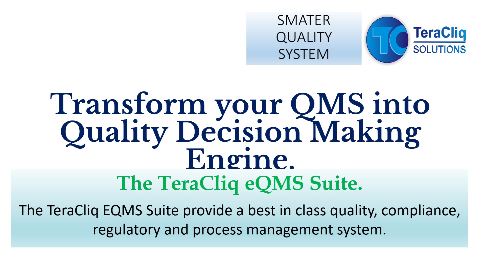
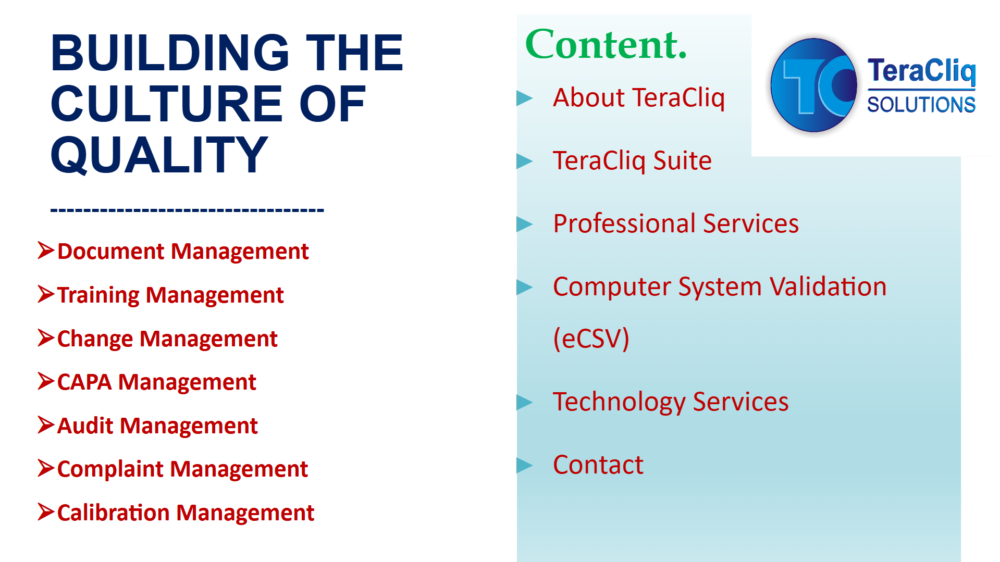

Fragmented Event Management
Deviations, CAPA, audit findings, change control, and complaints often live in separate tools or spreadsheets with no clean event linkage.
SciNEXA eQMS unifies CAPA, deviations, change control, audits, complaints, OOS/OOT, risk assessment, supplier quality, and lab incidents into a single closed-loop quality management platform built for regulated life sciences operations.
Manual and fragmented quality processes create delay, poor visibility, repeated data entry, and weak evidence retrieval across the full lifecycle of quality events.
Deviations, CAPA, audit findings, change control, and complaints often live in separate tools or spreadsheets with no clean event linkage.
Investigations stall when ownership, approvals, evidence collection, and follow-up are managed manually across departments.
Actions may close administratively without proving whether risk has actually been reduced or prevented from recurring.
Inspection readiness suffers when teams need days to compile event history, signatures, linked documents, and training evidence.
Support GxP quality management with coverage expectations aligned to FDA, ICH Q10, ISO, EU MDR/IVDR, and WHO GMP practices.
Reduce delays by routing quality events through structured review, action, approval, and verification steps.
Ensure actions are not only assigned and closed, but checked for actual impact on risk reduction and recurrence prevention.
Retrieve linked tasks, approvals, records, attachments, and history without piecing data together manually.

Track corrective and preventive actions from initiation through effectiveness verification.
Capture, assess, investigate, and route deviations with clear ownership and escalation.
Manage planned changes with impact assessment, approval logic, and linked implementation evidence.
Plan audits, log findings, assign actions, and maintain readiness across internal and external programs.
Handle market or customer complaints with linked investigation, root cause, and closure records.
Structure abnormal laboratory result investigations with complete traceability and decision control.
Apply risk-based thinking consistently across event handling and decision pathways.
Extend quality collaboration to vendors, partners, and outsourced operations with structured oversight.
Manage laboratory-specific events and support cross-functional quality intelligence.
Demonstrate whether actions actually worked through measurable and reviewable verification.
Aggregate trends, actions, and risk signals into executive quality oversight.
Capture deviations, complaints, incidents, or findings with complete event context.
Evaluate risk, impact, priority, and required routing with governed logic.
Drive root cause analysis and evidence gathering across affected functions.
Launch corrective and preventive actions with deadlines, approvals, and accountability.
Check whether actions resolved the problem and prevented recurrence.
Surface trends, quality signals, and lessons learned for continuous improvement.
See pending tasks, event status, bottlenecks, and critical quality signals immediately.
Monitor quality performance, event trends, and operational load through clear dashboards.
Identify recurring root causes, process instability, and risk concentration across units or sites.
Convert event data into quality improvement actions instead of isolated administrative records.
Expose only relevant tasks, approvals, and information to each user group securely.
Track who saw, changed, approved, and escalated each event across the workflow.
Bring CDMOs, vendors, and external stakeholders into controlled quality workflows with governed access.
Drive SOP updates in DMS and retraining needs in LMS directly from quality events.
Coordinate processes, approvals, and reporting across global quality organizations from a single platform.

All reviews, approvals, and verifications are captured online with identity-linked signatures.
Every event, workflow transition, approval, edit, and system action is traceable.
Support regulated operations with digital controls aligned to major quality and compliance frameworks.
Adapt workflows to site or product needs without losing standardization and governance.
Trigger controlled document revisions when change events or findings require updated procedures.
Assign retraining when SOPs, CAPA actions, or quality changes affect employee qualification.
Connect abnormal laboratory results and investigation evidence to structured quality event workflows.
Link deviations, process changes, and manufacturing evidence back to operational execution.
Bridge master data, material, and enterprise process context where needed.
Extend quality control over existing tools without forcing a disruptive replacement strategy.
Reduce quality-event lead time with clear routing, ownership, and evidence control.
Assemble event history, approvals, and linked actions quickly instead of in days.
Maintain full visibility into event progression, signatures, and verification status.
Standardize quality execution while preserving local visibility and controlled flexibility.
SciNEXA eQMS helps regulated teams accelerate investigations, strengthen compliance, and drive measurable quality improvement from one connected platform.